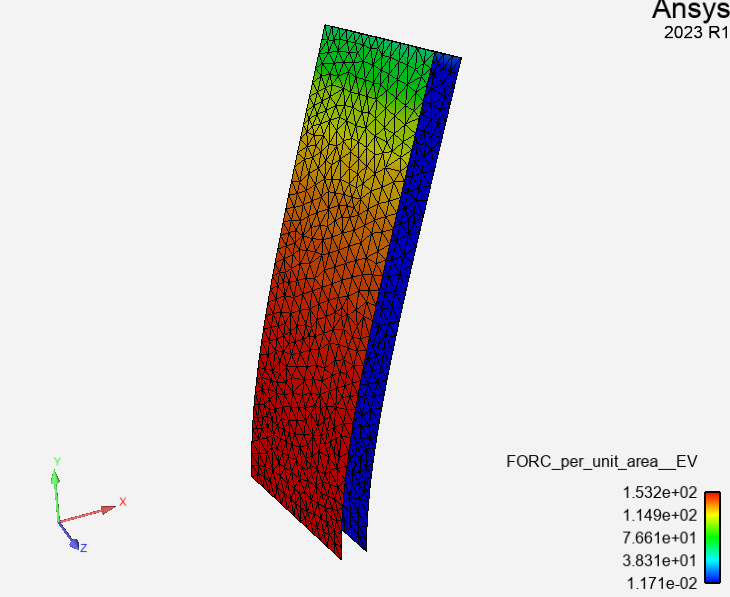
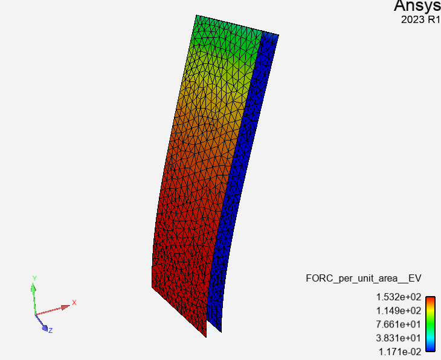

Note
Go to the end to download the full example code
Parametric sweep#
This example is based on a steady FSI case where the fluid is flowing over a flexible plate. It shows how you use PySystemCoupling with some other PyAnsys libraries.
The case is run a number of times, with varying fluid inlet velocity. The goal is to extract the maximum plate deflection from each solution and examine how it responds to the changing velocity value.
 

{kind=link}
Perform required imports#
This example imports these PyAnsys libraries: PySystemCoupling, PyFluent, and PyDPF. It also imports Matplotlib and NumPy to produce a simple plot of the results.
import os
import ansys.dpf.core as pydpf
import ansys.fluent.core as pyfluent
import matplotlib.pyplot as plt
import numpy as np
import ansys.systemcoupling.core as pysyc
from ansys.systemcoupling.core import examples
from ansys.systemcoupling.core.syc_version import SYC_VERSION_DOT
Define functions#
This example is broken into functions that define the main steps that
must be performed. It makes particular sense to do this for the
main task of running a coupled analysis because this task must be repeated
for multiple values of a single input parameter. This is encapsulated
in the get_max_displacement function. In turn, this function is broken
into further functions that represent its main steps. Also, functions are
defined to prepare the working directory (setup_working_directory)
and plot the final results (plot).
Set up working directory#
To set up the working directory with the downloaded data files for this
example, use the setup_working_directory() function. In the working
directory, the MAPDL files are placed in a Mapdl subdirectory, and
the Fluent files are placed in a Fluent subdirectory. The
setup_working_directory() function returns the path of the
working directory for later use.
def setup_working_directory():
examples.delete_downloads()
mapdl_scp_file = examples.download_file(
"mapdl.scp", "pysystem-coupling/parametric_sweep_vel/Mapdl"
)
fluent_scp_file = examples.download_file(
"fluent.scp", "pysystem-coupling/parametric_sweep_vel/Fluent"
)
mapdl_dat_file = examples.download_file(
"ds.dat", "pysystem-coupling/parametric_sweep_vel/Mapdl"
)
fluent_cas_file = examples.download_file(
"case.cas.h5", "pysystem-coupling/parametric_sweep_vel/Fluent"
)
working_dir = os.path.dirname(mapdl_scp_file)
fluent_working_dir = os.path.join(working_dir, "Fluent")
os.mkdir(fluent_working_dir)
mapdl_working_dir = os.path.join(working_dir, "Mapdl")
os.mkdir(mapdl_working_dir)
os.rename(fluent_cas_file, os.path.join(fluent_working_dir, "case.cas.h5"))
os.rename(mapdl_dat_file, os.path.join(mapdl_working_dir, "ds.dat"))
os.rename(fluent_scp_file, os.path.join(fluent_working_dir, "fluent.scp"))
os.rename(mapdl_scp_file, os.path.join(mapdl_working_dir, "mapdl.scp"))
return working_dir
Set inlet velocity#
To modify the Fluent case to adjust the inlet velocity on the
"wall_inlet" velocity inlet boundary condition, use the
set_inlet_velocity() function. This function is called
with a varying inlet_velocity``value before each call of
the ``solve_coupled_analysis command in a sequence of analyses.
def set_inlet_velocity(working_dir, inlet_velocity):
with pyfluent.launch_fluent(
product_version=f"{SYC_VERSION_DOT}.0", precision="double", processor_count=2
) as session:
case_file = os.path.join(working_dir, "Fluent", "case.cas.h5")
session.file.read(file_type="case", file_name=case_file)
session.setup.boundary_conditions.velocity_inlet[
"wall_inlet"
].momentum.velocity = inlet_velocity
session.file.write(file_type="case", file_name=case_file)
print(f"Inlet velocity is set to {inlet_velocity}")
Solve coupled analysis#
Perform a single coupled analysis. In this example, the only change
between successive calls to this function is in the content of the
Fluent input file that is used. The value for the inlet_velocity
setting is modified in the Fluent file prior to this function being called.
Note
System Coupling is launched anew for each call of this function.
The with pysyc.launch(...) syntax ensures
that the System Coupling session is properly exited at the
end of the scope defined by the with block.
def solve_coupled_analysis(working_dir):
with pysyc.launch(working_dir=working_dir) as syc:
print("Setting up the coupled analysis.")
fluent_name = syc.setup.add_participant(
input_file=os.path.join("Fluent", "fluent.scp")
)
mapdl_name = syc.setup.add_participant(
input_file=os.path.join("Mapdl", "mapdl.scp")
)
fsi_name = syc.setup.add_interface(
side_one_participant=fluent_name,
side_one_regions=["wall_deforming"],
side_two_participant=mapdl_name,
side_two_regions=["FSIN_1"],
)
syc.setup.add_data_transfer(
interface=fsi_name,
target_side="One",
source_variable="INCD",
target_variable="displacement",
)
syc.setup.add_data_transfer(
interface=fsi_name,
target_side="Two",
source_variable="force",
target_variable="FORC",
)
syc.setup.solution_control.maximum_iterations = 7
print("Solving the coupled analysis. This may take a while....")
syc.solution.solve()
print("...done.")
Extract maximum displacement value#
Use PyDPF to query the MAPDL results for the extract the maximum displacement value in the solution.
def extract_max_displacement(working_dir):
print("Extracting max displacement value")
model = pydpf.Model(os.path.join(working_dir, "Mapdl", "file.rst"))
displacements = model.results.displacement()
fields = displacements.outputs.fields_container()
value = max([v[0] for v in fields[0].data])
print(f"Max displacement value = {value}")
return value
Get maximum displacement#
Use the previously defined functions to:
Modify the Fluent input file to apply the provided
inlet_velocitysetting.Run the coupled analysis based on this setting.
Extract and return the maximum displacement value from the MAPDL results.
def get_max_displacement(working_dir, inlet_velocity):
set_inlet_velocity(working_dir, inlet_velocity)
solve_coupled_analysis(working_dir)
return extract_max_displacement(working_dir)
Plot results#
Generate an x-y plot of the results, showing the maximum
displacement of the plate versus the inlet velocity.
def plot(working_dir, x, y):
fig, ax = plt.subplots()
ax.plot(x, y, "-o")
ax.set(
xlabel="Inlet velocity [m/s]",
ylabel="Max Displacement [m]",
title="Plate max displacement vs. inlet velocity",
)
ax.grid()
plt.savefig(os.path.join(working_dir, "displacement"))
Run analyses#
Use the get_max_displacement() function sequentially, with input
velocity values provided by an initialized x array.
The results of the calls to the get_max_displacement() function
are used to fill in the corresponding values of the y array.
Finally, call the plot() function to generate a plot from the arrays.
x = np.array([5.0, 10.0, 15.0, 20.0, 25.0])
y = np.array([0.0] * len(x))
working_dir = setup_working_directory()
for index, inlet_velocity in enumerate(x):
y[index] = get_max_displacement(working_dir, inlet_velocity)
plot(working_dir, x, y)
Fast-loading "C:\ANSYSDev\ANSYSI~1\v241\fluent\fluent24.1.0\\addons\afd\lib\hdfio.bin"
Done.
Note: Rank = 0: Process affinity not being set (6).
Note: Rank = 1: Process affinity not being set (6).
Reading from HOSTNAME_1:"C:\Users\user00\AppData\Local\Ansys\ansys_systemcoupling_core\examples\Fluent\case.cas.h5" in NODE0 mode ...
Reading mesh ...
58065 cells, 1 cell zone ...
58065 hexahedral cells, zone id: 2
187138 faces, 8 face zones ...
161252 quadrilateral interior faces, zone id: 1
295 quadrilateral velocity-inlet faces, zone id: 5
295 quadrilateral pressure-outlet faces, zone id: 6
980 quadrilateral wall faces, zone id: 7
985 quadrilateral wall faces, zone id: 8
105 quadrilateral wall faces, zone id: 9
11613 quadrilateral symmetry faces, zone id: 10
11613 quadrilateral symmetry faces, zone id: 11
71280 nodes, 1 node zone ...
Warning: reading 4 partition grid onto 2 compute node machine.
Combining every 2 partitions.
Done.
Building...
mesh
distributing mesh
parts..,
faces..,
nodes..,
cells..,
bandwidth reduction using Reverse Cuthill-McKee: 16512/278 = 59.3957
materials,
interface,
domains,
mixture
zones,
symmetry2
symmetry1
wall_deforming
wall_top
wall_bottom
interior-part-fluid
wall_inlet
wall_outlet
part-fluid
parallel,
dynamic zones,
wall_deforming
wall_top
wall_bottom
symmetry2
symmetry1
Done.
Writing to HOSTNAME_1:"C:\Users\user00\AppData\Local\Ansys\ansys_systemcoupling_core\examples\Fluent\case.cas.h5" in NODE0 mode and compression level 1 ...
Grouping cells for Laplace smoothing ...
58065 cells, 1 zone ...
187138 faces, 8 zones ...
71280 nodes, 1 zone ...
Done.
Done.
Inlet velocity is set to 5.0
Setting up the coupled analysis.
Solving the coupled analysis. This may take a while....
...done.
Extracting max displacement value
Max displacement value = 0.05236548596272902
Inlet velocity is set to 10.0
Setting up the coupled analysis.
Solving the coupled analysis. This may take a while....
...done.
Extracting max displacement value
Max displacement value = 0.19232826991977978
Inlet velocity is set to 15.0
Setting up the coupled analysis.
Solving the coupled analysis. This may take a while....
...done.
Extracting max displacement value
Max displacement value = 0.37276751735981967
Inlet velocity is set to 20.0
Setting up the coupled analysis.
Solving the coupled analysis. This may take a while....
...done.
Extracting max displacement value
Max displacement value = 0.5624418880813694
Inlet velocity is set to 25.0
Setting up the coupled analysis.
Solving the coupled analysis. This may take a while....
...done.
Extracting max displacement value
Max displacement value = 0.721266826019441
Total running time of the script: (11 minutes 27.899 seconds)